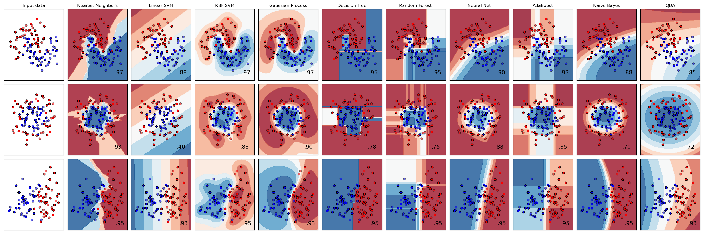
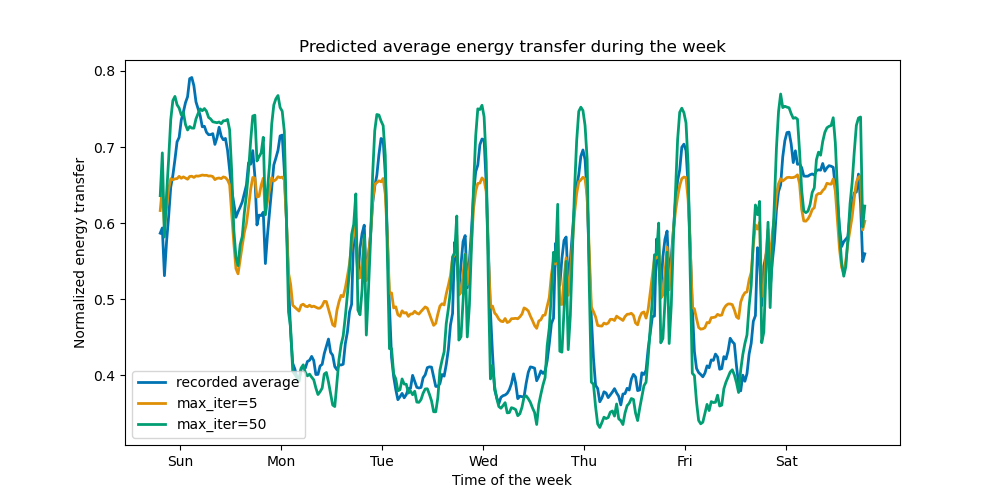
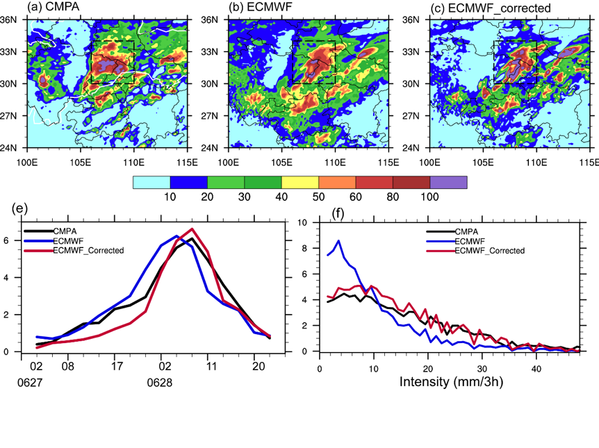
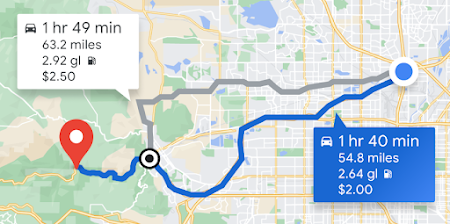

Introducción a la Inteligencia Artificial y el Machine Learning
Curso: Machine learning — aprendizaje supervisado de regresión en Python
28 de julio de 2026
Sesión 1
De qué hablamos cuando hablamos de “inteligencia artificial”
Qué veremos hoy
- Inteligencia artificial — qué es, qué no es, y de dónde viene el término.
- Machine learning — en qué se diferencia de programar “a mano”.
- Paradigmas — supervisado, no supervisado, semisupervisado, por refuerzo.
- Tipos de tarea — clasificación, regresión, clustering.
- Aplicaciones — dónde se usa esto de verdad.
- Hacia dónde va el curso — por qué nos centraremos en regresión.
Hoy no habrá código ni matemáticas. La idea es construir el mapa mental completo antes de entrar en las fórmulas y en Python.
1 · ¿Qué es la inteligencia artificial?
Una definición oficial
Un sistema de IA es “un sistema basado en máquinas que, para objetivos explícitos o implícitos, infiere, a partir de la entrada que recibe, cómo generar salidas tales como predicciones, contenido, recomendaciones o decisiones que pueden influir en entornos físicos o virtuales”.
Los sistemas de IA varían en su nivel de autonomía y de adaptabilidad después de ser desplegados.
OCDE (2023). Explanatory memorandum on the updated OECD definition of an AI system. https://oecd.ai/en/dashboards/policy-initiatives/updated-oecd-definition-of-an-ai-system-4108
Por qué esa definición es tan cuidadosa
Es la definición que adoptaron los países miembros de la OCDE en 2023 y la que sirve de base a buena parte de la regulación actual sobre IA.
“Infiere” No basta con seguir reglas fijas: el sistema deriva algo que no estaba escrito explícitamente.
“Objetivos implícitos” El objetivo puede no estar declarado; puede estar embebido en los datos.
“Adaptabilidad” El sistema puede cambiar su comportamiento después de haber sido desplegado.
Fíjense en lo que no dice: no menciona redes neuronales, ni Python, ni grandes volúmenes de datos.
OCDE (2023). Updated OECD Definition of an AI system. https://oecd.ai/en/dashboards/policy-initiatives/updated-oecd-definition-of-an-ai-system-4108
IA no es lo mismo que machine learning
Todo el machine learning es IA, pero no toda la IA es machine learning.
IBM. ¿Qué es el machine learning (ML)? — https://www.ibm.com/mx-es/think/topics/machine-learning
2 · ¿Qué es el machine learning?
Definición
El machine learning es el subconjunto de la inteligencia artificial centrado en algoritmos que pueden “aprender” los patrones de los datos de entrenamiento y, posteriormente, hacer inferencias precisas sobre datos nuevos.
Esa capacidad de reconocimiento de patrones permite que los modelos tomen decisiones o predicciones sin instrucciones explícitas y codificadas.
En palabras de Google: el ML es el proceso de entrenar un programa —llamado modelo— para hacer predicciones útiles o generar contenido a partir de datos.
IBM. ¿Qué es el machine learning (ML)? — https://www.ibm.com/mx-es/think/topics/machine-learning · Google for Developers. What is Machine Learning? — https://developers.google.com/machine-learning/intro-to-ml/what-is-ml
El cambio de enfoque
En la programación clásica escribimos las reglas. En machine learning damos ejemplos resueltos y el algoritmo deduce las reglas por su cuenta.
Google for Developers. What is Machine Learning? — https://developers.google.com/machine-learning/intro-to-ml/what-is-ml
Un ejemplo concreto: predecir la lluvia
Enfoque tradicional
Construir una representación física de la atmósfera y la superficie terrestre, y resolver enormes cantidades de ecuaciones de dinámica de fluidos.
Google lo describe como “increíblemente difícil”.
Enfoque de machine learning
Darle al modelo grandes cantidades de datos meteorológicos históricos hasta que aprenda la relación entre los patrones del clima y la cantidad de lluvia.
Después le damos el clima actual y predice la lluvia.
Ninguno de los dos es “mejor” siempre. El ML gana cuando la relación es difícil de escribir a mano pero está presente en los datos.
Google for Developers. What is Machine Learning? — https://developers.google.com/machine-learning/intro-to-ml/what-is-ml
Tres palabras que usaremos todo el curso
Modelo La relación matemática derivada de los datos que el sistema usa para predecir. No es un programa escrito por nosotros: es el resultado del entrenamiento.
Entrenamiento El proceso de ajustar el modelo mostrándole datos.
Inferencia / predicción Usar el modelo ya entrenado sobre datos nuevos, que nunca vio.
Google for Developers. What is Machine Learning? — https://developers.google.com/machine-learning/intro-to-ml/what-is-ml · IBM. ¿Qué es el machine learning (ML)? — https://www.ibm.com/mx-es/think/topics/machine-learning
3 · Paradigmas de aprendizaje
Los tres paradigmas fundamentales
Todos los métodos de machine learning pueden clasificarse en uno de tres paradigmas, según la naturaleza de sus objetivos de entrenamiento.
Supervisado
Entrena un modelo para predecir la salida correcta para una entrada dada. Requiere una “verdad fundamental” externa.
No supervisado
Entrena un modelo para descubrir patrones intrínsecos, dependencias y correlaciones. No hay respuesta correcta contra la cual comparar.
Por refuerzo
Entrena un modelo para evaluar su entorno y actuar buscando la mayor recompensa. No hay una verdad única, pero sí acciones buenas y malas.
IBM. ¿Qué es el machine learning (ML)? — https://www.ibm.com/mx-es/think/topics/machine-learning
Aprendizaje supervisado
El modelo aprende a partir de datos que ya traen la respuesta correcta (datos etiquetados).
Google lo compara con un estudiante que se prepara estudiando exámenes antiguos que incluyen tanto las preguntas como las respuestas. Cuando ha practicado con suficientes exámenes viejos, está listo para uno nuevo.
Es “supervisado” en el sentido de que un humano le entrega al sistema datos con los resultados correctos ya conocidos. Sus dos casos de uso más comunes son regresión y clasificación.
Google for Developers. What is Machine Learning? — https://developers.google.com/machine-learning/intro-to-ml/what-is-ml
Aprendizaje no supervisado
Los algoritmos disciernen patrones intrínsecos en datos no etiquetados: similitudes, correlaciones o agrupaciones potenciales.
Son especialmente útiles cuando esos patrones no son evidentes para un observador humano.
Como no se asume la preexistencia de una salida “correcta” conocida, no requieren señales de supervisión ni funciones de pérdida convencionales — de ahí el nombre.
IBM. ¿Qué es el machine learning (ML)? — https://www.ibm.com/mx-es/think/topics/machine-learning
Aprendizaje semisupervisado
Usa tanto datos etiquetados como datos no etiquetados.
La idea: aprovechar la información de los pocos datos etiquetados disponibles para hacer suposiciones sobre los puntos no etiquetados, de modo que estos últimos puedan incorporarse al flujo de trabajo supervisado.
Por qué existe: etiquetar datos es caro y lento. Un radiólogo marcando tumores en diez mil imágenes cuesta muchísimo; conseguir diez mil imágenes sin marcar es barato.
En scikit-learn esto aparece como Self Training y Label Propagation.
IBM. ¿Qué es el machine learning (ML)? — https://www.ibm.com/mx-es/think/topics/machine-learning · scikit-learn. 1.14. Semi-supervised learning — https://scikit-learn.org/stable/modules/semi_supervised.html
Aprendizaje por refuerzo
El modelo aprende por prueba y error, recibiendo recompensas o penalizaciones según las acciones que realiza dentro de un entorno.
En lugar de pares independientes de entrada-salida, opera sobre tuplas interdependientes de estado – acción – recompensa. El objetivo no es minimizar un error, sino maximizar la recompensa.
Se usa sobre todo en robótica, videojuegos y problemas donde el espacio de soluciones es muy amplio o difícil de definir. Al sistema se le suele llamar agente.
Ejemplos: enseñar a un robot a caminar; AlphaGo aprendiendo a jugar Go.
IBM. ¿Qué es el machine learning (ML)? — https://www.ibm.com/mx-es/think/topics/machine-learning · Google for Developers. What is Machine Learning? — https://developers.google.com/machine-learning/intro-to-ml/what-is-ml
Y además: IA generativa
Una clase de modelos que crea contenido a partir de la entrada del usuario: texto, imágenes, audio, video, código.
Aprenden patrones de los datos con el objetivo de producir datos nuevos pero similares. Google los compara con un comediante que imita a otros observándolos, o con una banda tributo que aprende a sonar como un grupo escuchando muchas de sus canciones.
Los modelos generativos se entrenan inicialmente con un enfoque no supervisado, y a veces se afinan después con aprendizaje supervisado o por refuerzo. No es un cuarto paradigma aislado, sino una combinación.
Google for Developers. What is Machine Learning? — https://developers.google.com/machine-learning/intro-to-ml/what-is-ml
Resumen de paradigmas
| Paradigma | ¿Datos etiquetados? | ¿Qué optimiza? | Tareas típicas |
|---|---|---|---|
| Supervisado | Sí | Acercarse a la respuesta correcta | Clasificación, regresión |
| Semisupervisado | Algunos sí, la mayoría no | Igual, aprovechando lo no etiquetado | Clasificación con pocos datos |
| No supervisado | No | Estructura interna de los datos | Clustering, asociación, reducción de dimensionalidad |
| Por refuerzo | No aplica | Maximizar recompensa acumulada | Control, robótica, juegos |
IBM. ¿Qué es el machine learning (ML)? — https://www.ibm.com/mx-es/think/topics/machine-learning · Google for Developers. What is Machine Learning? — https://developers.google.com/machine-learning/intro-to-ml/what-is-ml
4 · Tipos de tarea
Las tres tareas más comunes
Google for Developers. What is Machine Learning? — https://developers.google.com/machine-learning/intro-to-ml/what-is-ml · IBM. ¿Qué es el machine learning (ML)? — https://www.ibm.com/mx-es/think/topics/machine-learning
Clasificación
Un modelo de clasificación predice la probabilidad de que algo pertenezca a una categoría. A diferencia de la regresión, su salida no es un número sino una pertenencia.
Binaria — dos valores posibles
Ejemplos: ¿este correo es spam o no? ¿va a llover o no?
Multiclase — más de dos valores
Ejemplos: ¿esta foto contiene un gato, un perro o un pájaro? ¿lluvia, granizo, nieve o aguanieve?
Google for Developers. What is Machine Learning? — https://developers.google.com/machine-learning/intro-to-ml/what-is-ml
Clasificación: cómo se ve de verdad

Distintos clasificadores sobre los mismos tres conjuntos de datos. Cada color de fondo es la región que el modelo asigna a cada clase; el número es su exactitud. Fíjense en que el mismo dato admite fronteras muy distintas.
scikit-learn developers. Classifier comparison — https://scikit-learn.org/stable/auto_examples/classification/plot_classifier_comparison.html
Regresión
Un modelo de regresión predice un valor numérico.
Los modelos de regresión predicen valores continuos: precio, duración, temperatura, tamaño.
| Escenario | Datos de entrada posibles | Predicción numérica |
|---|---|---|
| Precio futuro de una vivienda | Metros cuadrados, código postal, número de habitaciones y baños, tamaño del lote, tasa de interés hipotecario, impuestos | El precio de la vivienda |
| Duración futura de un trayecto | Condiciones históricas de tráfico, distancia al destino, condiciones meteorológicas | El tiempo hasta llegar |
Google for Developers. What is Machine Learning? — https://developers.google.com/machine-learning/intro-to-ml/what-is-ml · IBM. ¿Qué es el machine learning (ML)? — https://www.ibm.com/mx-es/think/topics/machine-learning
Regresión: cómo se ve de verdad

Predicción del consumo eléctrico a lo largo de la semana. La línea azul es lo que ocurrió; naranja y verde son dos modelos con distinto grado de ajuste. La salida es un número para cada instante, no una categoría.
scikit-learn developers. Time-related feature engineering — https://scikit-learn.org/stable/auto_examples/applications/plot_cyclical_feature_engineering.html
Clustering y otras tareas no supervisadas
La mayoría de los métodos no supervisados hacen una de estas tres cosas:
Agrupación (clustering) Divide los puntos en grupos según su proximidad o similitud. Usos: segmentación de mercado, detección de fraude. Algoritmos: k-means, mezclas gaussianas, DBSCAN.
Asociación Distingue correlaciones entre acciones y condiciones. Usos: motores de recomendación de comercio electrónico.
Reducción de dimensionalidad Representa los datos con menos características conservando lo significativo. Usos: preprocesamiento, compresión, visualización. Algoritmos: PCA, LDA, t-SNE, autocodificadores.
El clustering se diferencia de la clasificación en que las categorías no las define uno: el modelo agrupa, y darles nombre es trabajo del humano después.
IBM. ¿Qué es el machine learning (ML)? — https://www.ibm.com/mx-es/think/topics/machine-learning · Google for Developers. What is Machine Learning? — https://developers.google.com/machine-learning/intro-to-ml/what-is-ml
Clustering: cómo se ve de verdad

Once algoritmos de agrupación sobre seis conjuntos de datos distintos. Ninguno gana siempre: los círculos concéntricos de la primera fila derrotan a k-means y los resuelve DBSCAN. No existe el algoritmo universalmente mejor.
scikit-learn developers. Comparing different clustering algorithms on toy datasets — https://scikit-learn.org/stable/auto_examples/cluster/plot_cluster_comparison.html
Un mismo algoritmo, varias tareas
Muchos algoritmos de ML supervisado sirven para clasificación y para regresión. El resultado de lo que nominalmente es un algoritmo de regresión puede usarse después para fundamentar una predicción de clasificación.
En la documentación de scikit-learn, las máquinas de vectores de soporte (SVM) tienen su propia sección de clasificación y su propia sección de regresión. Lo mismo ocurre con los árboles de decisión y con los vecinos más cercanos.
IBM. ¿Qué es el machine learning (ML)? — https://www.ibm.com/mx-es/think/topics/machine-learning · scikit-learn. 1.4. Support Vector Machines — https://scikit-learn.org/stable/modules/svm.html
5 · ¿Dónde se usa esto?
Vehículos autónomos
Los vehículos autónomos son uno de los ejemplos que Google cita como emblemáticos del machine learning.
Video propio · Google for Developers. What is Machine Learning? — https://developers.google.com/machine-learning/intro-to-ml/what-is-ml
Predicción del clima

Precipitación observada (a) frente a la predicción del modelo (b) y a la predicción corregida (c). Corregir la salida de un modelo físico con datos históricos es, en esencia, un problema de regresión.
Organización Meteorológica Mundial (OMM/WMO). Desarrollo de la predicción meteorológica operativa condicionada por las propiedades de la triple… — https://wmo.int/es/media/magazine-article/desarrollo-de-la-prediccion-meteorologica-operativa-condicionada-por-las-propiedades-de-la-triple-de
Tiempo de ruta

Estimar cuánto tardará un trayecto a partir del tráfico histórico, la distancia y las condiciones meteorológicas es regresión pura: la salida es un número de minutos.
Google Maps Platform. Ofrece rutas eficientes — https://mapsplatform.google.com/intl/es-419_mx/solutions/offer-efficient-routes/
Y muchas más
- Traducción automática — aplicaciones de traducción entre idiomas.
- Recomendación — sugerir canciones; motores de recomendación en comercio electrónico.
- Texto — autocompletar frases, resumir artículos.
- Imágenes — generar imágenes nunca antes vistas; mejorar fotos de producto y quitar fondos.
- Negocio y riesgo — segmentación de mercado y detección de fraude mediante clustering.
- Salud — apoyo al diagnóstico a partir de imágenes médicas.
Google for Developers. What is Machine Learning? — https://developers.google.com/machine-learning/intro-to-ml/what-is-ml · IBM. ¿Qué es el machine learning (ML)? — https://www.ibm.com/mx-es/think/topics/machine-learning
¿Cuándo tiene sentido usar machine learning?
Cuando existe un patrón, no sabemos escribirlo como reglas explícitas, y tenemos datos suficientes que lo contienen.
Cuándo no: si el problema se resuelve con una fórmula conocida, con reglas claras y estables, o si no hay datos representativos, un modelo de ML añade complejidad, coste y opacidad sin ganar nada.
Elaboración propia a partir de Google for Developers, What is Machine Learning? — https://developers.google.com/machine-learning/intro-to-ml/what-is-ml
6 · Hacia dónde va este curso
Nuestro recorrido
Nos concentraremos en aprendizaje supervisado de regresión en Python, con scikit-learn, la librería estándar de machine learning clásico.
Empezaremos por la regresión lineal y sus variantes, y llegaremos a las máquinas de vectores de soporte para regresión (SVR). Pero conviene que vean desde hoy cuántas familias de modelos de regresión existen.
scikit-learn developers. 1. Supervised learning — https://scikit-learn.org/stable/supervised_learning.html
Modelos de regresión en scikit-learn
Modelos lineales Mínimos cuadrados ordinarios, Ridge, Lasso, Elastic-Net, LARS, regresión bayesiana, regresión cuantílica, regresión polinómica.
Regresión robusta RANSAC, Huber, Theil-Sen — para datos con valores atípicos.
Máquinas de vectores de soporte SVR, con distintos núcleos (lineal, polinómico, RBF).
Vecinos más cercanos Predice promediando los ejemplos más parecidos.
Árboles de decisión Divide el espacio en regiones y predice un valor en cada una.
Ensambles Bosques aleatorios, gradient boosting, AdaBoost, bagging, stacking.
Procesos gaussianos Predicen un valor y su incertidumbre.
Redes neuronales Perceptrón multicapa para regresión.
Otros Kernel ridge, descenso de gradiente estocástico, regresión isotónica, PLS.
scikit-learn developers. 1. Supervised learning — https://scikit-learn.org/stable/supervised_learning.html · 1.1. Linear Models — https://scikit-learn.org/stable/modules/linear_model.html · 1.4. Support Vector Machines — https://scikit-learn.org/stable/modules/svm.html
Para cerrar
- La IA es cualquier sistema que infiere salidas a partir de entradas para cumplir un objetivo.
- El machine learning es el subconjunto que aprende esos patrones de los datos en vez de recibirlos como reglas.
- Hay tres paradigmas: supervisado, no supervisado y por refuerzo — más combinaciones como el semisupervisado y la IA generativa.
- Las tareas más comunes son clasificación, regresión y clustering.
- Este curso vive en la casilla supervisado → regresión.
A partir de la próxima sesión sí habrá código y matemáticas.
Referencias
Definición de inteligencia artificial
- OCDE (2023). Explanatory memorandum on the updated OECD definition of an AI system. OECD Artificial Intelligence Papers No. 8. https://www.oecd.org/en/publications/explanatory-memorandum-on-the-updated-oecd-definition-of-an-ai-system_623da898-en.html
- OECD.AI. Updated OECD Definition of an AI system. https://oecd.ai/en/dashboards/policy-initiatives/updated-oecd-definition-of-an-ai-system-4108
Machine learning: conceptos y paradigmas
- IBM. ¿Qué es el machine learning (ML)? — https://www.ibm.com/mx-es/think/topics/machine-learning
- Google for Developers. Machine Learning Crash Course — What is Machine Learning? https://developers.google.com/machine-learning/intro-to-ml/what-is-ml (licencia CC BY 4.0)
Algoritmos e implementación
- scikit-learn developers. 1. Supervised learning · 2. Unsupervised learning · 1.4. Support Vector Machines · 1.14. Semi-supervised learning. https://scikit-learn.org/stable/supervised_learning.html
- scikit-learn developers. Classifier comparison · Comparing clustering algorithms · Time-related feature engineering (figuras). https://scikit-learn.org/stable/auto_examples/index.html
Figuras de aplicaciones
- OMM/WMO. Desarrollo de la predicción meteorológica operativa… — https://wmo.int/es/media/magazine-article/desarrollo-de-la-prediccion-meteorologica-operativa-condicionada-por-las-propiedades-de-la-triple-de
- Google Maps Platform. Ofrece rutas eficientes — https://mapsplatform.google.com/intl/es-419_mx/solutions/offer-efficient-routes/
Consultado el 27 de julio de 2026.
Gracias
Preguntas
Andrés F. PuertaIntroducción a la IA y el Machine LearningSesión 1